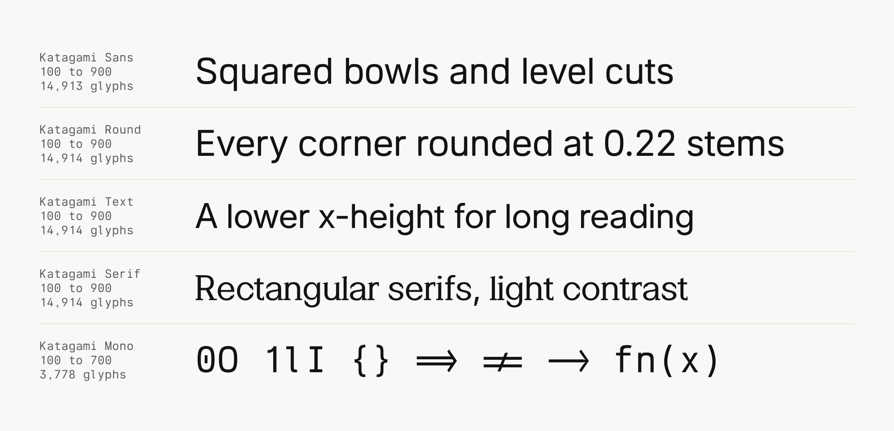

Katagami Serif is Katagami Text with wedge serifs and high contrast, for reading. It is one of the five members of the Katagami family, which are built from one source by the same scripts: Katagami Sans, Katagami Round, Katagami Text, Katagami Serif and Katagami Mono. Like Katagami Text, it starts from the outlines of Inter, and its details follow Geist Serif. The feet of stems take wedge serifs that taper to a fine tip and climb the stem in a curved bracket, and the top of each lowercase vertical stem slopes down to a wedge on its left. The arms of E, F, L, T and Z end in pointed beaks. Horizontal strokes are thinner than vertical ones: at Regular the thin side of o is 0.40 of its stem. The strokes that rise to the right, such as the left of A and the right of V, are thin too. The ends of curved strokes take an upright face that runs past the cut to a beak, and the g has two bowls.

Katagami Serif has a roman and an Italic. Each is a variable font with a weight axis from Thin (100) to Black (900), and each weight in steps of 100 is a named instance. The serifs keep a fine tip at every weight, slightly fuller at Thin so they still read there. The Italic slants 9.4 degrees, and its serifs sit where those of the roman do.
Katagami draws Latin, Greek and Cyrillic. The roman and the Italic also set 28 more scripts, among them Arabic, Hebrew, Devanagari, Bengali, Tamil, Thai, Georgian, Armenian and Ethiopic. They are merged from other fonts under the SIL Open Font License and scaled to the x-height of Katagami. The Italic slants them 9.4 degrees, as it slants the Latin.
Katagami Serif is released under the SIL Open Font License 1.1.